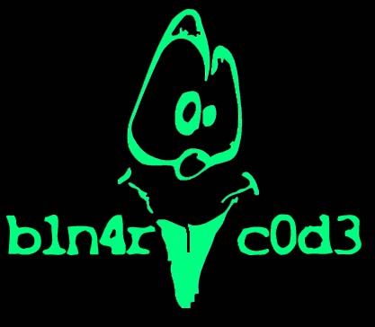
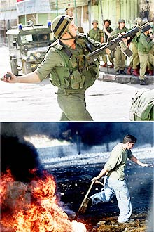

b1n4ry c0d3 from World's Fantabulous "Defenders"(LoveWorld) hacked Community College of Denver =(... ps.: hey SysADM, I bkped your system =) ! 'cuz the Love Palestine Forever !
Leia isto e veja você o que acontece na Palestina...Read this and See you that happens in Palestine...
Israel exigiu hoje dos palestinos esforços reais na luta contra a
violência como condição para participar nas negociações sobre o plano de paz do
presidente norte-americano Bill Clinton.
"Deve
haver um tratamento radical do problema da violência. Se nós constatarmos dentro de
alguns dias que há um esforço por parte dos palestinos na luta antiterrorista, deveremos
voltar à mesa de negociações", disse pela rádio estatal o ministro israelense de
Relações Exteriores, Shlomo Ben Ami.
"Iasser Arafat se comprometeu a
mobilizar esforços nesse sentido e nós queremos ver como isso se manifesta no
terreno", disse.
Segundo
o jornal "Haaretz", as autoridades israelenses querem que o presidente da
Autoridade Palestina se expresse publicamente contra a continuação da violência, que
reinicie sua cooperação com Israel em matéria de segurança, que prenda dezenas de
militares islâmicos que havia libertado e que proíba as incitações ao ódio nos meios
de comunicação que controla.
Até
agora, os palestinos consideravam que as conversações com Israel eram compatíveis com o
levante palestino (Intifada), que em sua opinião é legítimo, já que expressa a luta
contra a ocupação israelense.
Em
um comunicado, o "gabinete de paz" israelense, que conta com vários ministros e
personalidades vinculados aos esforços de paz, informou que havia aceitado as propostas
de Clinton de estabelecer um órgão trilateral, dirigido por oficiais superiores, cuja
tarefa será impedir os atos de terrorismo e provocar uma redução da violência.
Israelenses
e palestinos se reunirão domingo no Cairo, na presença do diretor da CIA (agência de
inteligência dos EUA), George Tenet, para examinar os meios de reduzir a violência,
informou hoje um alto dirigente palestino em Gaza.
Seus
interlocutores palestinos serão os chefes de segurança Mohamed Dahlan, Khibril Rakhub e
Amin el Hindi, precisou. Segundo a rádio de Israel, a parte israelense será representada
pelo ministro de Transportes, Amnon Lipkin-Shahak, um general da reserva, ex-chefe de
Estado-Maior.
O
porta-voz da Casa Branca, P.J. Crowley, informou que as próximas consultas em Washington
serão dedicadas a estudar os meios de conseguir uma clara redução da violência.
Desde
o começo da Intifada, no dia 28 de setembro do ano passado, a violência na Cisjordânia,
faixa de Gaza, Israel e Jerusalém causou 367 mortos e milhares de feridos.
Nós só queremos que o mundo tome consciência do que queremos
dizer ! Nós queremos difundir a palavra e ter certeza que todo o mundo saiba o que
acontece em Israel, Primeiro lugar, quero dizer que não sou contra qualquer religião.
Só queremos que as pessoas saibam como aquelas pessoas estão sofrendo! Guerras entre
Mulçumanos e Judeus... E nisso como ficam as crianças desses países? Seu brinquedo é
uma arma ? O que estas crianças aprendem ? Como se defender em uma guerra ? Matar pessoas
inocentes ? Estuprar as mulheres ?
O que nós ganhamos com isto ? Nada mais que satisfação. Se nosso trabalho é esparramar as palavras nestes sites porcos, Vamos colocar algo que preste, Nao essas mesmas lamisses de sempre, aí sim podemos dizer que estamos contentes! críticas ? e-mail me !
Open up your heart...and see the true injustice of what happened in Palestine...=)
Israeli Logic:
"If
you kill one person, you are a murderer, if you kill ten people you are a celebrity, and
if you kill a quarter of a million people, you get invited to a peace conference."
"World's Fantabulous DEFENDERS in search of the Global Peace"
Admin, He who runs away lives to "hack" another day.
© 2k1, ...BRAZIL...
<E0F>